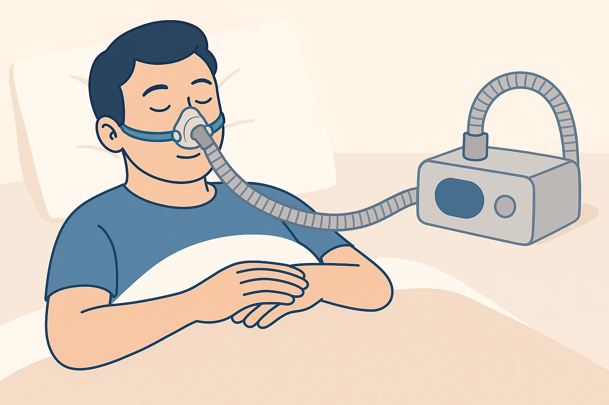

CPAP Therapy
CPAP (Continuous Positive Airway Pressure) therapy is the first-line treatment for moderate to severe obstructive sleep apnea. It uses a machine to deliver a steady stream of air through a mask worn during sleep, keeping your airway open. Modern CPAP machines are quiet, adjustable, and can track your sleep data to help improve effectiveness over time.
Oral Appliances

Custom-made dental appliances reposition the lower jaw or tongue to help keep the airway open during sleep. These devices are ideal for patients with mild to moderate OSA or for those who cannot tolerate CPAP therapy. Oral appliances are compact, easy to travel with, and do not require power.
Inspire Therapy
Inspire is an implantable device that stimulates the airway muscles during sleep to prevent collapse. The device is placed under the skin during a same-day outpatient procedure and is controlled using a remote. Inspire is FDA-approved and works inside your body, activated when you sleep and turned off when you wake.
Nasal & Sinus Surgery
For patients with anatomical issues like a deviated septum or turbinate hypertrophy, nasal and sinus surgery can significantly improve airflow and sleep quality. These procedures include septoplasty, turbinate reduction, and balloon sinuplasty, often performed under local anesthesia with minimal downtime.
Weight Management
Excess weight is a major risk factor for sleep-disordered breathing. We offer in-house support through registered dietitians, nutrition counseling, and medication-assisted options like GLP-1 receptor agonists (e.g., Zepbound). A modest weight loss can reduce the severity of OSA or even resolve it entirely in some patients.